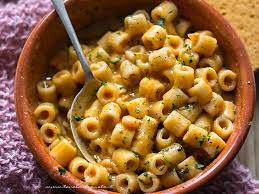

Pasta e Fagioli

Image of cooked Pasta e Fagioli. perfect food to serve your family and friends
Ingrediants
- 1 tablespoon olive oil
- 1 medium onion,chopped
- 2 stalks celery, chopped
- 3 cloves garlic, minced
- 2 teaspoons dried parsley
- 1 teaspoon Italian seasoning
- 1/4 teaspoon crushed red pepper flakse
- salt to taste
- 1(14.5 ounce) can chicken broth
- 2 medium toamtoes, peeled and chopped
- 1(8 ounce)can tomato sauce
- 1/2 cup uncooked spinach pasta
- 1(15 ounce)can cannellini beens, with liquid
Steps
- Heat olive oil in a large saucepan over medium heat. Add onion,
celery, garlic, parsley, Italian seasoning, pepper flakes,
and salt; cook and stir until onion is translucent, about 5
minutes. Stir in chicken broth, tomato sauce, and tomatoes.
Reduce the heat to low and simmer for 15 to 20 minutes.
-
Add pasta and cook until tender, about 10 minutes.
-
Stir in undrained beans and cook until heated through, 3 to 4 minutes.